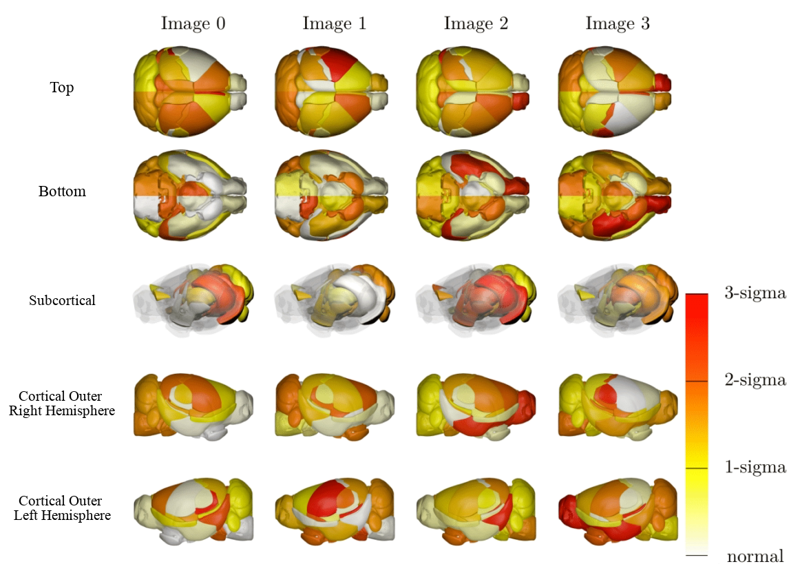

BrainPainter was made to take raw data from neuroscience studies and transform it into something more interperetable. Visualization of the raw data is a way to communicate results from trials more effectively.
As a contributor to this project, I added different viewing angles, added visualization for the left hemisphere, and developed a way to visualize mice brains. I am supervised by Dr.Razvan Marinescu. I first-authored a paper while working on this project, check it out here. You can find the code for this project on GitHub. You can also run BrainPainter from the browser here. Feel free to reach out to me to talk about my work on BrainPainter.